RoT (Romanian Traffic Signs Tutor)
Cuprins
- Introducere
- Scop si obiective
- Funcționalități principale
- Detalii tehnice
- Structura
- Stiluri CSS globale
- Elemente comune pentru header
- Elemente comune pentru footer
- Butoane comune pentru tipurile de indicatoare
- Arhitectura aplicatiei
- Stocarea codului aplicatiei
- Echipa
- Masuri de securitate
- Resurse
- Concluzii
Autori
- Emil Cosma
- Caplea Veronica
1. Introducere
Proiectul nostru de dezvoltare web are ca obiectiv crearea unei platforme online dedicate învățării semnelor rutiere și a legislației de circulație, adresându-se unui public divers, ce cuprinde atât persoanele care se pregătesc pentru obținerea permisului de conducere, cât și șoferii cu experiență, pietonii și cicliștii.
Site-ul va oferi utilizatorilor informații detaliate și actualizate despre semnele rutiere, regulile de circulație și comportamentul responsabil în trafic. În plus, va include chestionare cu întrebări relevante și variate, concepute pentru a testa cunoștințele și pentru a monitoriza progresul utilizatorilor în mod interactiv.
Scopul nostru este de a oferi un mediu accesibil și util pentru îmbunătățirea cunoștințelor și a comportamentului în trafic, contribuind astfel la creșterea gradului de conștientizare și responsabilitate în rândul participanților la trafic și, implicit, la reducerea accidentelor rutiere și îmbunătățirea siguranței pe drumurile publice.
2. Scop si obiective
Proiectul nostru de dezvoltare web își propune să ofere o soluție interactivă și informativă pentru învățarea semnelor rutiere și a legislației de circulație. Platforma va oferi acces facil la informații detaliate despre regulile de circulație și semnele rutiere, într-un format prietenos și ușor de înțeles.
3. Funcționalități principale
Fiecare utilizator va avea acces la urmatoarele funcționălități:- sa se inregistreze pe site.
- sa se autentifice pe site
- să acceseze pagina "Invata regulile rutiere" pentru a accesa codul rutier
- să acceseze pagina "Invata semnele de circulatie" pentru a vizualiza semne rutiere
- dacă este autentificat, să acceseze pagină "Aplica cunostintele invatate" și să rezolve chestionare
- dacă este autentificat, să își acceseze profilul și sa verifice statisticile personale
- dacă utilizatorul are rol de admin, acesta poate șterge utilizatori din baza de date
- dacă utilizatorul are rol de admin, acesta poate adăuga întrebări noi
- dacă utilizatorul are rol de admin, acesta poate elimina întrebări
- dacă utilizatorul are rol de admin, acesta poate modifica întrebări deja existente
- dacă utilizatorul are rol de admin, acesta poate adăuga chestionare noi
- dacă utilizatorul are rol de admin, acesta poate modifica chestionare deja existente
4. Detalii tehnice
Frontend:
Interfața utilizatorului este dezvoltata folosind HTML, CSS și JavaScript. Se asigura o experiență intuitivă și prietenoasă pentru utilizatori.5.Structura
5.1. Structura de bază a paginii
Fiecare pagină HTML a aplicației are o structură de bază comună:
<!DOCTYPE html>
<html>
<head>
<!-- Metadate și legături către fișierele CSS și JavaScript -->
</head>
<body>
<header>
<div class="first-part-header">
<a href="..\index.html"><img id="logo" src="images/logo.png"></a>
<h1>Romanian Traffic Signs Tutor</h1>
<p id="account"><a href="..\Account_Button_Page/account_button_page.html" id="account-button">Account</a></p>
</div>
<div class="border">
<ul>
<li><a class="top-button" href="..\Select_Between\select_between.html">BACK</a></li>
</ul>
</div>
</header>
<!-- Conținutul vizibil al paginii -->
<footer>
<div class="divider_footer"></div>
<p class="copyrights">@Copyright Emil&Vero srl. All rights reserved</p>
<p class="footer_text">Contact:</p>
<p class="footer_text">Emil: cosmaemil1414@gmail.com</p>
<p class="footer_text">Veronica: capleaveronica29@gmail.com</p>
</footer>
</body>
</html>
5.2. Tehnologii utilizate
Tehnologiile folosite pentru acest proiect sunt HTML5, CSS, JavaScript (interfata).
5.3. Pagini si experienta utilizatorului
Main page
La aceasta pagina vor avea acces atat utilizatorii autentificati, cat si cei neautentificați. Aceasta va fi prima pagina care apare atunci cand cineva intra pe site. De aici, utilizatorul va putea naviga catre restul paginilor.
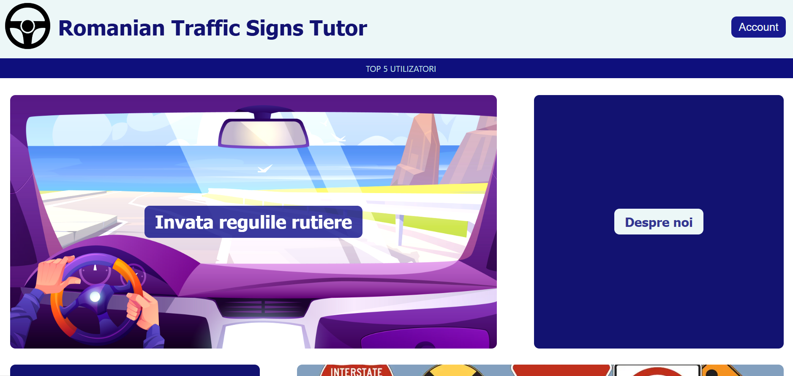 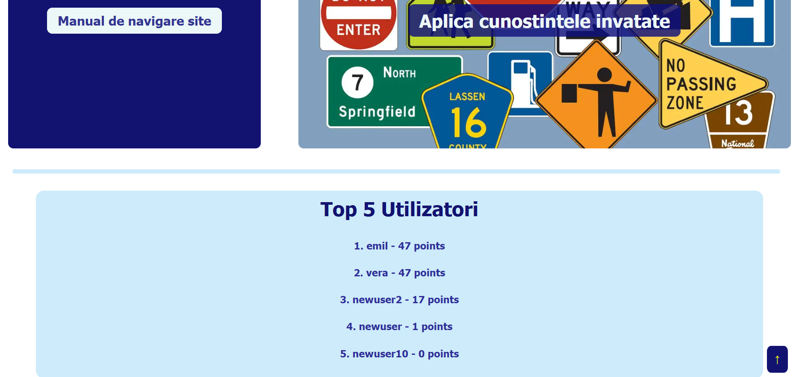Mediu de invatare
Din aceasta pagina utilizatorul poate alege catre a naviga intre pagina cu codul rutier sau cea cu semnele de circulatie. 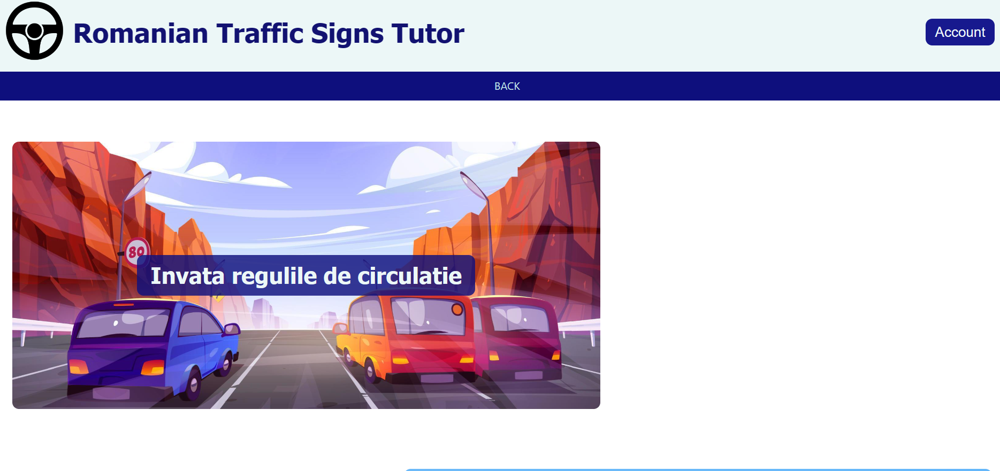 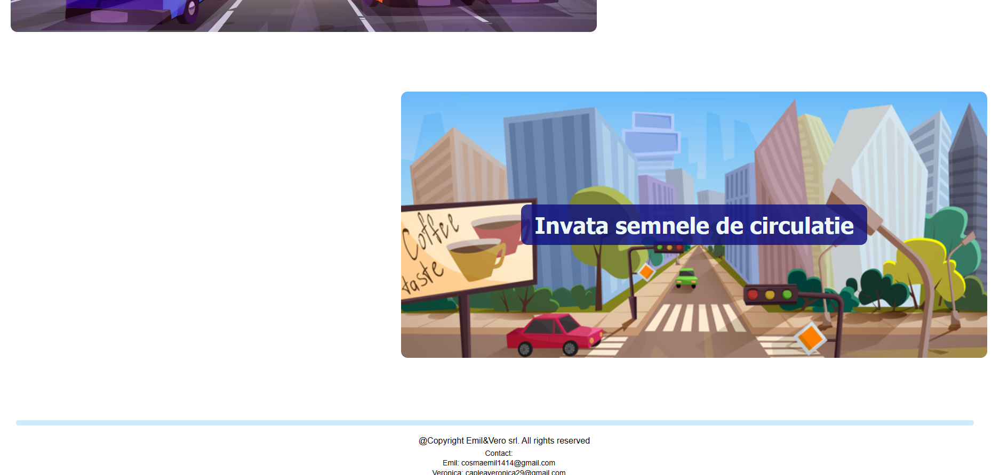Invata codul rudier
Aceasta pagina ofera informatii despre codul rutier. 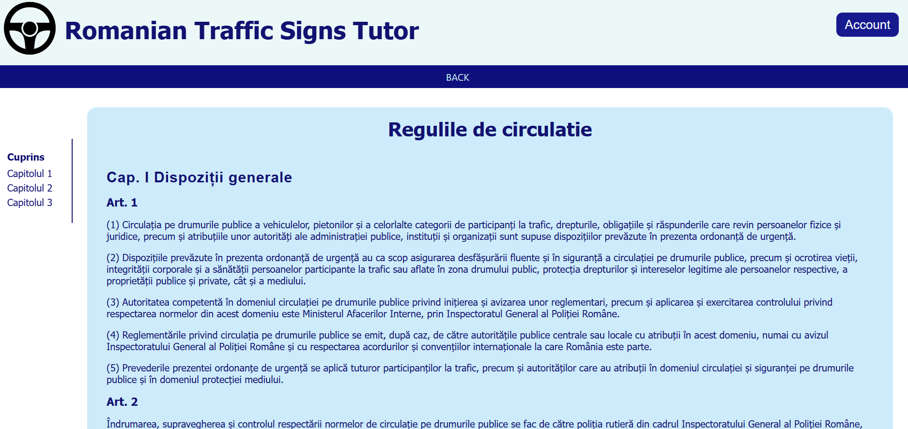Invata semnele de circulatie
Aceasta pagina ofera utilizatorului diferite categorii de semne de circulatie din care poate invata. 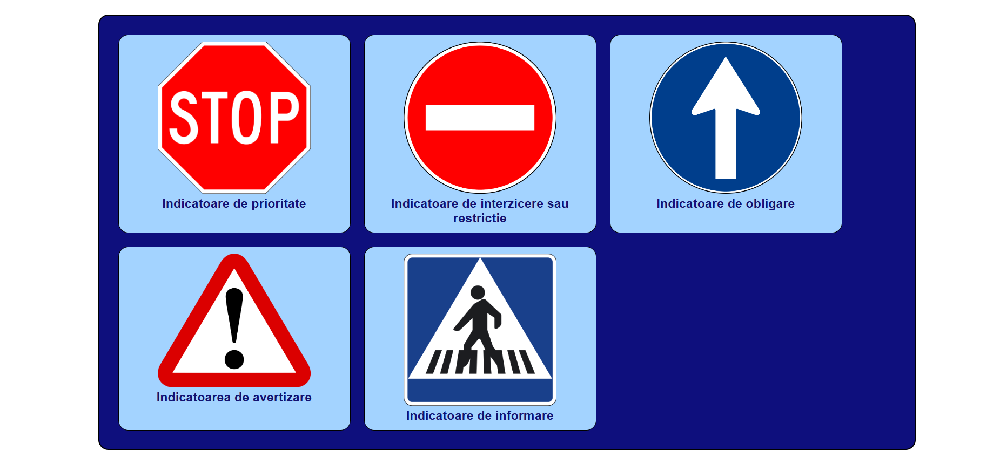 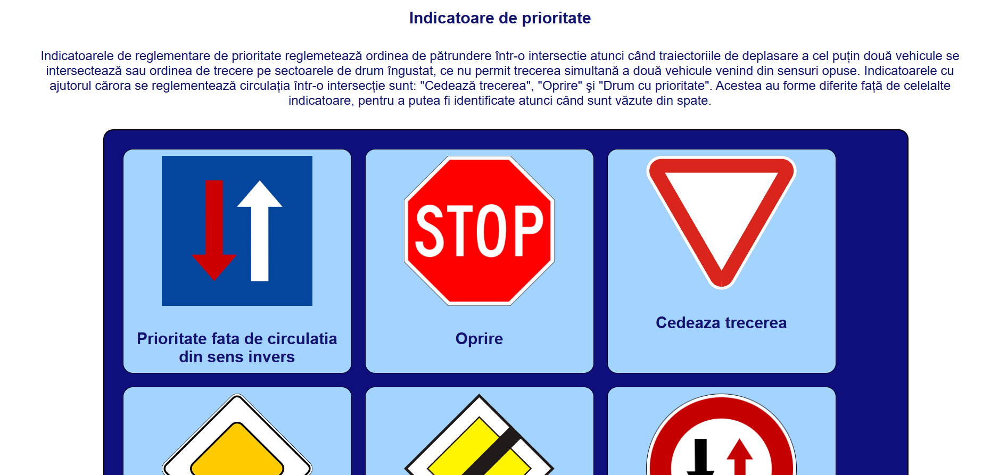 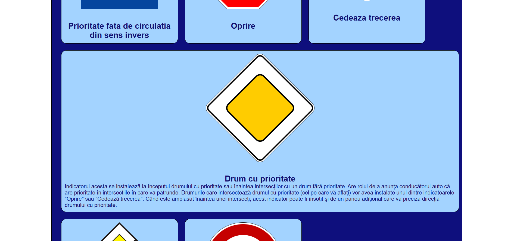Chestionare
Aceasta pagina ofera utilizatorului ocazia de a isi testa cunostintele dobandite in mediul de invatare, prin intermediul unor chestionare pe diferite nivele de dificultate. 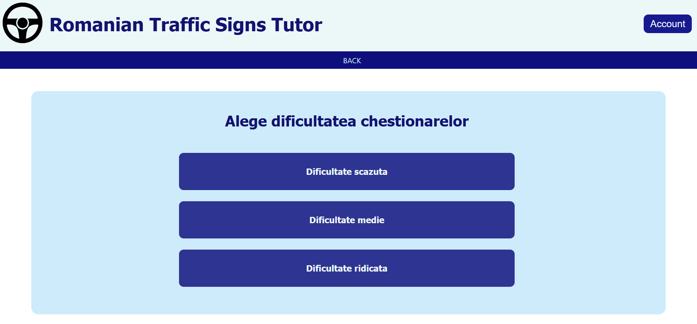 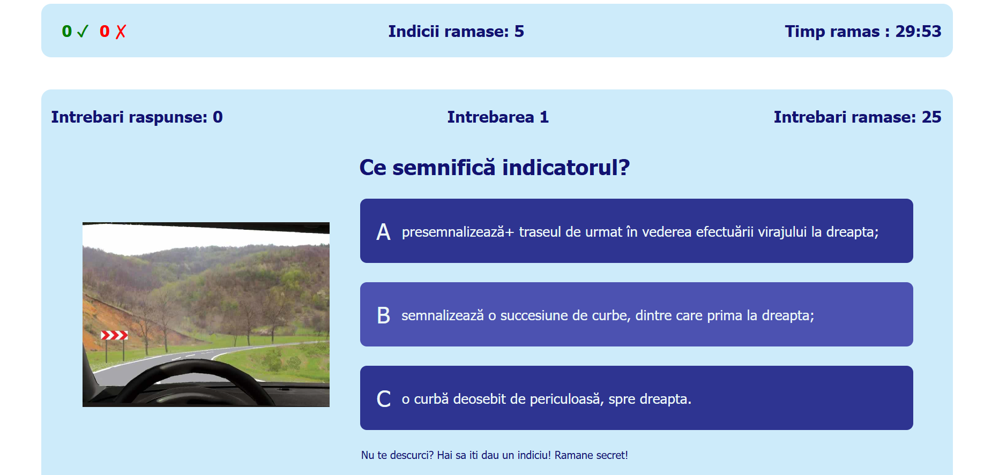Profil
Aceasta pagina este vizibila doar utilizatorului autentificat si ofera informatii despre utilizator si progresul acestuia in aplicatie. 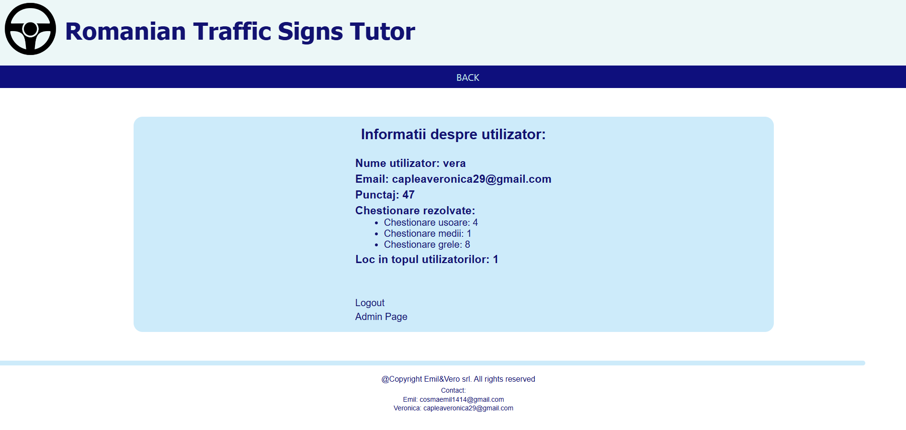Login
Aceasta pagina este destinata autentificarii utilizatorului. 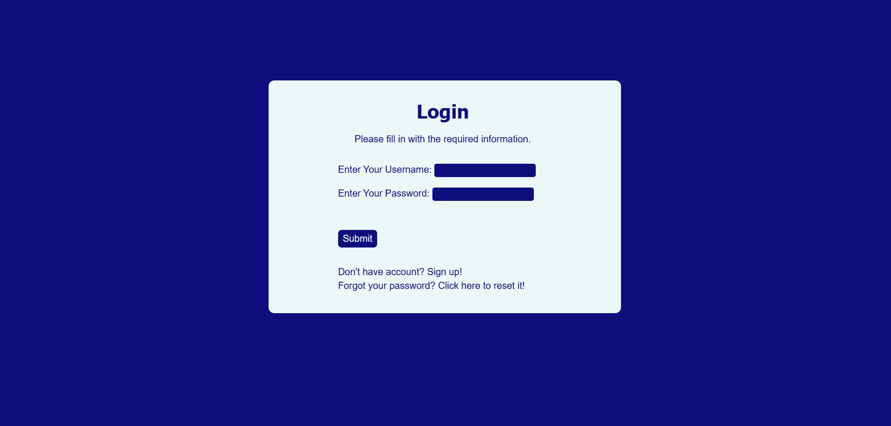Sign-up
Aceasta pagina permite utilizatorului creeare unui cont pe site. 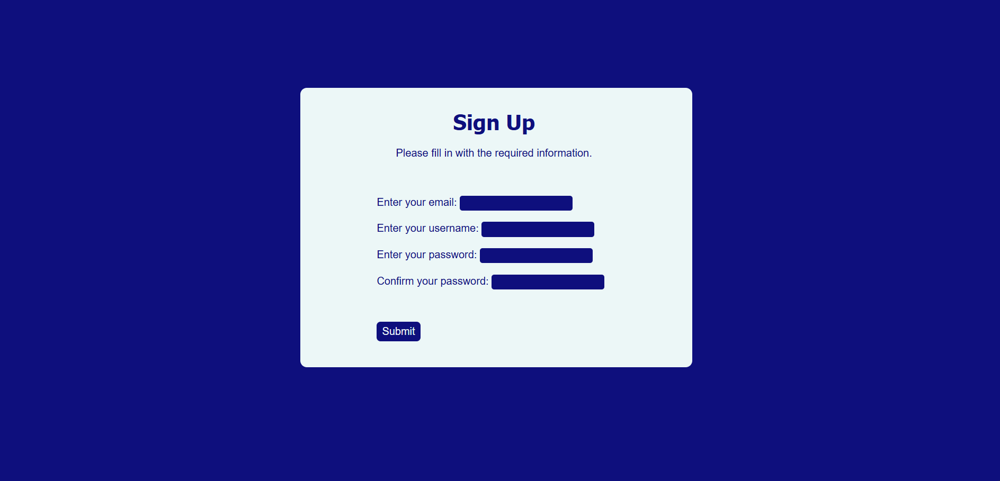Forgot Password
Aceasta pagina ofera posibilitatea utilizatorului sa iti reseteze parola in caz de a uitat-o. Site-ul trimite un email pentru resetarea acesteia. 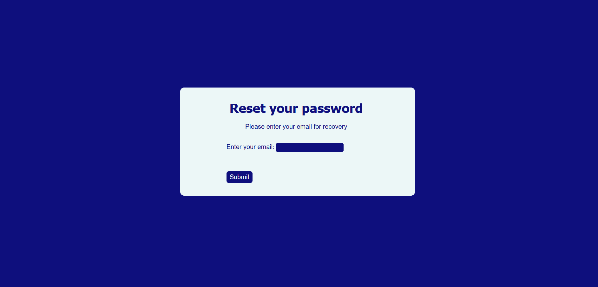Admin control page
Din aceasta pagina, un utilizator admin are diferite optiuni de moderare al site-ului. 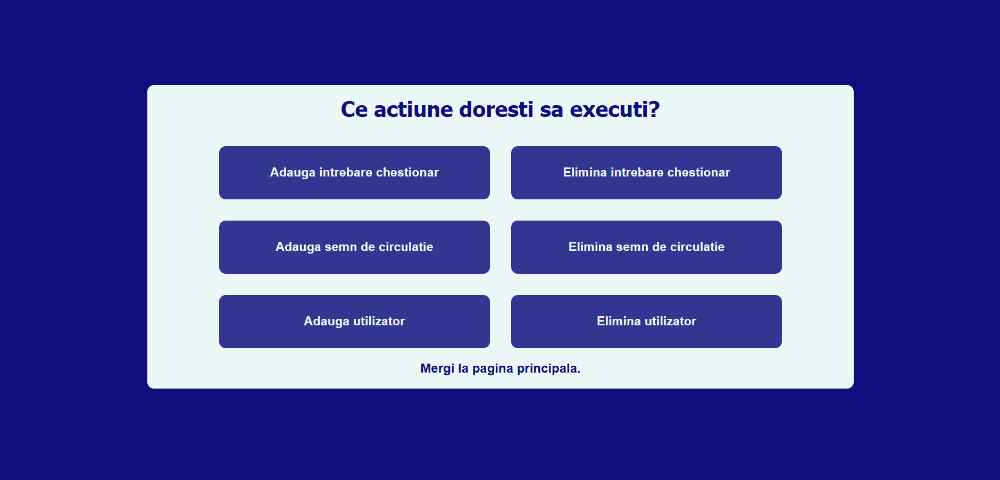6. Stiluri CSS globale
Pentru a asigura coerența și un aspect uniform, sunt folosite următoarele stiluri CSS globale:
6.1 Elemente comune pentru header
* {
box-sizing: border-box;
margin: 0;
padding: 0;
}
.first-part-header{
display : flex;
align-items: center;
background-color: rgb(236, 247, 247);
}
#logo {
width: max(3.5rem, 7.5vw);
}
h1 {
color: rgb(18, 18, 113);
font-size: min(4.5vw, 2.5rem);
width: 90vw;
font-family: Tahoma, sans-serif;
}
#account{
margin-left: auto;
margin-right: 20px;
border: none;
font-size: min(2vw, 1.3em);
font-family: Helvetica, sans-serif;
}
#account-button{
text-decoration: none;
color : rgb(238, 249, 249);
background-color: #17198e;
padding : 8px 14px;
border-radius: 10px;
}
#account-button:hover{
color : rgb(236, 247, 247);
background-color: #2f31a6;
}
#account-button:active{
color : rgb(252, 241, 92);
}
.border{
background-color: #0e0f7d;
width : 100vw;
height: min(13vh, 2.7em);
}
ul{
display: flex;
justify-content: space-evenly;
font-family: Helvetica, sans-serif;
margin : 0;
padding : 0;
}
li{
list-style-type: none;
padding-top: 0.6em;
padding-bottom: 0.5em;
}
.top-button{
color : rgb(197, 232, 232);
text-decoration: none;
font-family:'Segoe UI', Tahoma, Geneva, Verdana, sans-serif;
}
.top-button:hover{
color : white;
}
.top-button:active {
color : yellow;
}
6.2 Elemente comune pentru footer
.divider_footer{
background-color : #1ca3e638;
height : 0.5em;
width: 95%;
margin: 2em;
margin-bottom: 1em;
border-radius: 10px;
}
footer{
height: 10vh;
width: 100%;
position: absolute;
}
.footer_text{
font-family: Helvetica;
font-size: 0.7rem;
text-align: center;
margin-bottom: 2px;
}
.copyrights{
padding-left: 1rem;
padding-bottom: 0.3rem;
font-family: Helvetica;
font-size: 0.8rem;
text-align: center;
}
6.3 Butoane comune pentru tipurile de indicatoare
body{
font-family: Helvetica;
}
.box {
display: flex;
flex-wrap: wrap;
justify-content: space-between;
width: 80%;
margin: 20px auto;
padding: 20px;
background-color: rgb(193, 223, 244);
border-radius: 10px;
}
.button {
width: min(30vw, 20rem);
margin: 0 0 3rem 0;
text-align: center;
font-size: min(1.2rem, 3vw);
}
.button a {
display: block;
text-decoration: none;
color: inherit;
}
.button img {
width: 100%;
height: auto;
}
.button h3 {
margin: 10px 0;
font-size: min(1.5rem, 4vw);
}
.button button {
background-color: #007bff;
color: #fff;
border: none;
padding: 10px 20px;
border-radius: 5px;
cursor: pointer;
transition: background-color 0.3s ease;
padding: min(1.2vw, 0.5rem);
}
.button button:hover {
background-color: #0056b3;
}
6.4 Elemente comune pentru butoanele chestionarelor
.easy-questionnaire-type{
display : flex;
flex-direction: column;
align-items: center;
gap : 1rem;
height : 45rem;
width: 90%;
margin : 3rem auto;
background-color : #1ca3e638;
border-radius: 15px;
}
.message{
display: flex;
flex-direction: column;
font-family: Tahoma, sans-serif;
color :rgb(48, 48, 154);
}
h2{
margin-top: 12px;
}
h2, h3{
margin-bottom: 0.5em;
margin-left: 10px;
}
.questionnaire-section{
display : flex;
flex-direction : column;
justify-content: center;
width : min(60vw, 45em);
}
.big-button{
display: flex;
align-items: center;
text-align: center;
width: min(60vw, 45em);
height : 5em;
color : rgb(236, 247, 247);
background-color : #0e107dd5;
border-radius: 10px;
text-decoration: none;
font-family: Helvetica, sans-serif;
margin-top: 1.5em;
font-size: min(2.8vw, 1em);
}
.big-button:hover{
background-color: rgba(48, 50, 162, 0.822);
}
.big-button:active{
color : yellow;
}
.button-title{
margin-left: 10px;
font-size: 1.5em;
}
.little-button{
display: flex;
align-items: center;
justify-content: center;
height: 1.7em;
width: 6em;
margin-left: 0.8em;
border-radius: 5px;
font-family: Helvetica, sans-serif;
background-color: #b9ddf0;
color: #0e107dd5;
}
.little-button:hover{
background-color: #c1e9ff;
}
.little-button:active{
background-color: yellow;
}
.score{
display: flex;
align-items: center;
justify-content: center;
font-family: Helvetica, sans-serif;
font-size: 1.5em;
margin-left: auto;
margin-right: 10px;
}
7. Arhitectura aplicatiei
Componentele aplicatiei:
- Backend
- Frontend
- Baza de date : Firebase
Backend
Backend-ul aplicatiei este realizat in JavaScript, folosind Node.js. Acesta se ocupa de gestionarea cererilor HTTP, de validarea datelor si de comunicarea cu baza de date. Codul este organizat in functie de domeniul de care face parte aplicatia, astfel sunt implementate entitatile: user, questionnaire, sign. REST API-ul este compus din:
- [entity] models: query-uri directe in baza de date Firebase.
- [entity] controllers: logica principala pentru fiecare functionalitate, fiind folosite metodele corespunzatoare din models pentru a primi si a trimite informatiile catre baza de date. Verificarea requesturilor HTTP redirectionate de routes executand verificarile necesare:
- Verificare token.
- Verificarea atribute relevante.
- Verificarea existentei entitatii in tabel.
- [entity] server: definirea rutelor si apeleaza functiile din controllers necesare.
- Nodemailer: folosit pentru autentificarea la serverul SMTP Google si trimiterea mail-urilor pentru resetarea parolei.
- Jwt token pentru codarea si decodarea informatiilor de autentificare.
- Bcrypt pentru criptarea parolelor inainte de a fi stocate in baza de date.
Frontend
Frontend-ul aplicatiei este realizat in HTML, CSS si JavaScript. Acesta se ocupa de prezentarea informatiilor si de interactiunea cu utilizatorul. Design-ul e responsive si informatii temporare sunt stocate in localStorage pentru a nu forta autentificarea la fiecare pagina securizata.
Baza de date
Baza de date a aplicatiei este realizata in Firebase. Aceasta stocheaza datele utilizatorilor, intrebarile pentru chestionare si raspunsurile acestora, semnele de circulatie.
8. Stocarea codului aplicatiei
Codul aplicatiei poate fi gasit la adresa: https://github.com/EmilCosma/Proiect_Web.
9. Echipa
- Caplea Veronica
- Emil Cosma
Ambii participanti au contribuit atat la frontend, cat si la backend, impartirea task-urilor fiind una organizata datorita comunicarii eficiente a echipei.
10. Masuri de securitate
- Autentificare: cererile la server sunt autentificate pentru a preveni accesul neautorizat.
- Hashing Password: parolele sunt criptate inainte de a fi stocate in baza de date, asigurand pastrarea confidentialitatii utilizatorilor.
- Token: folosit pentru a verifica sesiunea de logare.
11. Resurse
- https://www.youtube.com/watch?v=_1xa8Bsho6A&t=1743s.
- https://www.freecodecamp.org/learn/2022/responsive-web-design/#learn-html-forms-by-building-a-registration-form.
- https://tehnologii-web.vercel.app/
12. Concluzii
Aplicatia RoT (Romanian Traffic Signs Tutor) ofera un suport detaliat pentru invatarea regulilor de circulatie si semnelor de circulatie. De asemenea, toate cunostintele dobandite in mediul de invatare al site-ului pot fi testate prin intermediul unor chestionare interactive. Acestea sunt impartite in trei categorii:
- Chestionare de dificultate scazuta:
- fara limita de timp
- numar infinit de hint-uri pentru intrebarile chestionarului
- numar maxim de greseli: 10
- Chestionare de dificultate scazuta :
- limita de timp : 30 minute
- numar de hint-uri pentru intrebarile chestionarului: 5
- numar maxim de greseli: 6
- Chestionare de dificultate ridicata:
- limita de timp : 15 minute
- nu exista posibilitatea de a primi hint-uri pentru intrebarile chestionarului
- numar maxim de greseli: 6
In concluzie, aplicatia RoT ofera toate etapele de invatare necesare pentru promovarea testului teoretic pentru permisul de conducere.